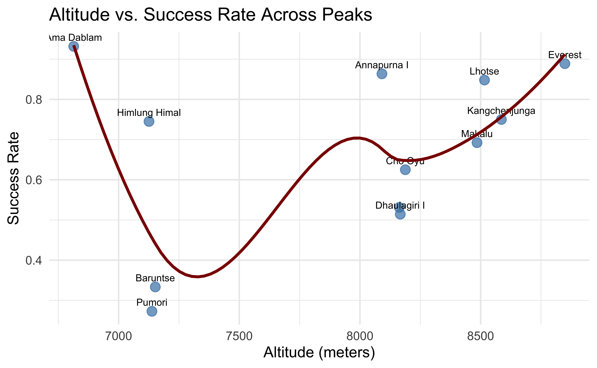
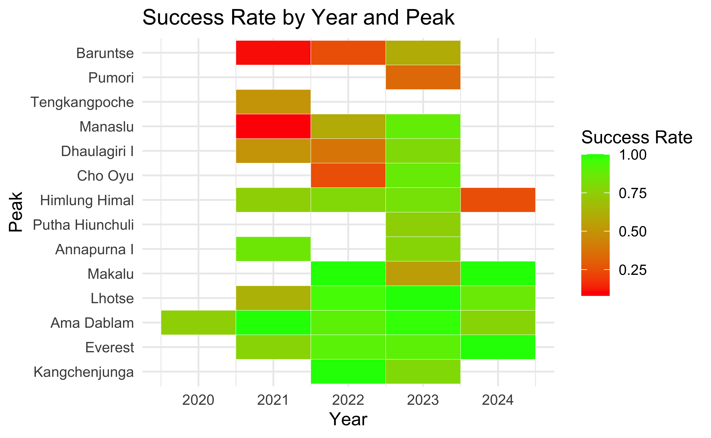
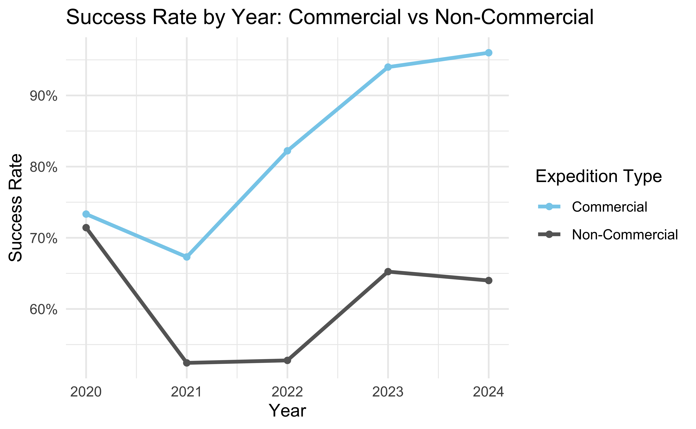
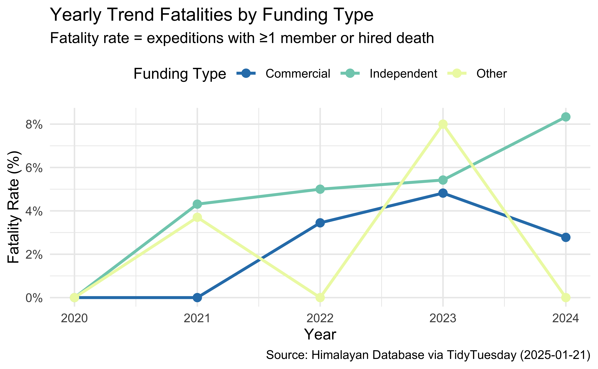
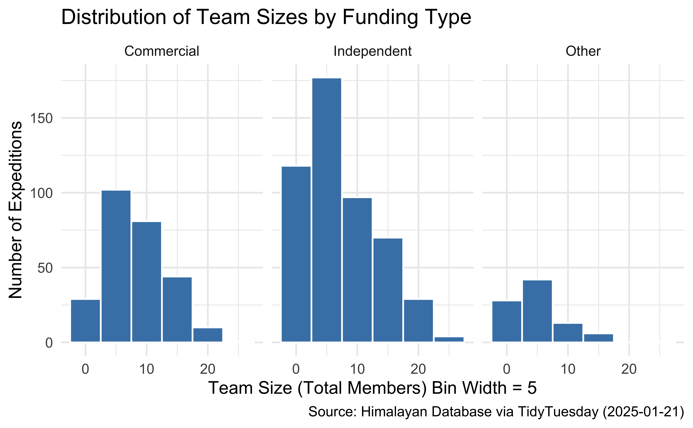
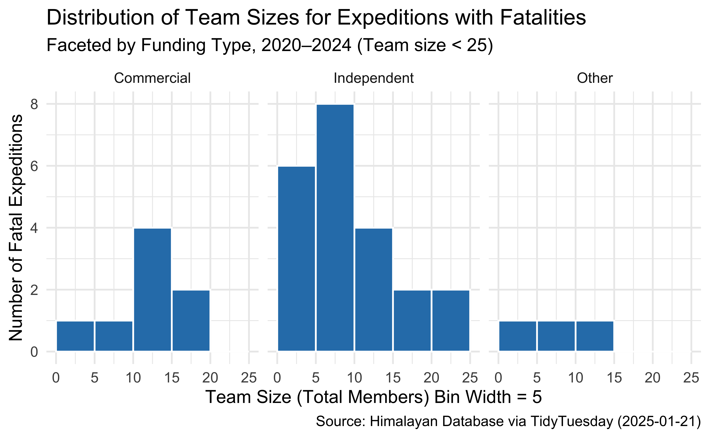

A Statistical Exploration of Himalayan Expeditions
INFO 526 - Summer 2025 - Final Project
Our Dataset
Himalayan Database - Created to continue the legacy of Elizabeth Hawley, a journalist who spent decades documenting Himalayan expeditions.
Dataset - TidyTuesday GitHub repository and has been amended to the years 2020 - 2024 to manage file size.
There are 2 main datasets :
exped_tidy - Contains details of expeditions
peaks_tidy - Includes data about the Himalayan Peaks
Question 1
What factors contribute to the success or failure of a summit?
Analyze expedition outcomes using both expedition and peak variables. “Success” will be defined based on the `TERMREASON_FACTOR`, with specific values representing a successful summit.
Use factors like – geography, team size, year, and commercial vs non-commercial expeditions
Question 1 : Approach
- Get Data from the CSV files
- Build Model & Variable Inferences
Code
table(exped$SUCCESS1, useNA = "ifany")
exped2 <- exped |>
mutate(
success = ifelse(SUCCESS1 %in% c("Y", "Yes", "yes"), 1,
ifelse(SUCCESS1 %in% c("N", "No", "no"), 0, as.numeric(SUCCESS1))),
peak = as.factor(PEAKID),
team_size = as.numeric(TOTMEMBERS),
oxygen = ifelse(O2USED %in% c("Y", "Yes", "yes"), 1,
ifelse(O2USED %in% c("N", "No", "no"), 0, as.numeric(O2USED))),
season = as.factor(SEASON)
) |>
filter(!is.na(success), !is.na(team_size), !is.na(oxygen))
model <- glm(
success ~ peak + team_size + oxygen + season + YEAR,
data = exped2,
family = "binomial"
)- Start plotting various charts building up to the case
Question 1 : Start
The Overall Success vs Failure Rate out of all expeditions.

We will study with following variables:
| Potential Factors to Study Success Rate |
|---|
| Explore Team Size |
| Effect of Geography |
| Explore by Year |
| Explore Commercial Factor |
Question 1 : Explore Team Size


Question 1 : Explore Team Size Analysis
These plots suggests a non-linear relationship between team size and summit success:
Very small teams (1–5 climbers)tend to have very high success rates.Probable cause - agility, lighter logistical needs, and tighter decision-making.
Small-to-medium teams (3–8 climbers)show a noticeable dip in success.Probable cause - enough complexity to introduce friction but not enough manpower to provide robust support.
Medium-large teams (9–20 climbers)exhibit steadily increasing success rates, peaking around 20 members at or near 100%.Probable cause - have enough members to spread tasks, establish well-stocked camps without yet suffering the full burden of very large-group logistics.
Very large teams (20+)see a gradual decline in success.Probable cause - supplies, campsite congestion, decision latency.
Question 1 : Effect of Geography


Question 1 : Effect of Geography Analysis
Geography, in particular the altitude band of a peak—turns out not to be a simple “the higher you go, the harder it gets” story.
Low-altitude peaks (~6800m, e.g. Ama Dablam)enjoy very high success rates, thanks to gentler slopes, shorter approaches and straightforward rope-fixed “ladder” routesMid-altitude peaks (~7100–7300m, like Pumori and Baruntse)dips to the bottom of the curve,mountains are often more technical, less commercialized, with fewer fixed ropes and smaller teams—so even though they’re “lower,” they prove tougherHigher Peaks (8000m+, like Everest)enjoys very high success rates, as they benefit from massive infrastructure (high-traffic base camps, helicopter support etc.), which more than offsets the physiological challenge of extreme altitude
Overall, a peak’s infrastructure and traffic are at least as critical to success as its height.
Question 1 : Explore by Year


Question 1 : Explore by Year Analysis
These plots suggests, despite a pandemic-driven slump in 2021, overall expedition success has rebounded strongly by 2024
2020average success rate ~ 72%Probable cause – pre-pandemic normalcy, full staffing, established logistics.
2021-2022average success rate fell to ~ 63%Probable cause – COVID travel restrictions & teams adapted to new health protocols and smaller expedition sizes.
2023-2024average success rate rebound to ~ 80%Probable cause – full operational recovery, improved high-altitude gear, accumulated guiding experience.
Question 1 : Commercial Factor



Question 1 : Commercial Factor Analysis
These plots suggests, A professional, well-resourced support structure not only accelerates recovery from external shocks (like a pandemic) but also delivers uniformly higher success rates—regardless of mountain or team size.
Commercial expeditions rebound faster and to a higher plateauIn 2021, both types dipped (COVID impact), but commercial climbs dropped only to ~67%, whereas non-commercial fell to ~53%. By 2024, commercial success surged to ~95 %, while non-commercial languished around ~64%.
Across individual peaks, company-run trips consistently outshine independent onesOn major peaks (Everest, Lhotse, Ama Dablam), commercial success rates hover in the 85–95 % range. Non-commercial attempts on the same mountains are 5–10 % lower.
Team-size effects differ by expedition typeCommercial: success stays high (75–100 %) across all team sizes, peaking around 20 members.
Non-commercial: a pronounced “U-shape”, very small groups (> 80 %) and very large groups (~75 %) do better, but mid-sized teams (5–10 climbers) dip down near 50 %
Question 2 : Intro
Does an expeditions funding affect safety outcomes?
This question overlaps somewhat with our earlier analysis of summit success rates, but here the focus shifts to safety. Specifically, are expeditions with different types of funding, commercial versus independent, more or less likely to experience accidents, injuries, illness, or death?
We’ll reuse some variables from the previous analysis (
SUCCESS,FATALITIES,TERMREASON), but this time we’ll group and compare results by a new derived variable,FUNDING_TYPE, which classifies expeditions as either “Commercial”, “Independent” or “Other”.Our analysis will explore basic climbing stats, reasons for expedition termination, distributions of safety related outcomes, and temporal trends stratified by funding type. The goal is to understand whether financial backing plays a role in the safety of Himalayan expeditions.
Question 2 : Setup
- Get Data from the CSV files
- Data Wrangling - Lean tibble of key variables
Code
# Lean tibble of variables of interest
exped_q2 <- exped |>
select(
YEAR, # Year of the expedition
SPONSOR, # Sponsor or funding organization
SUCCESS1, # Success on primary route
SUCCESS2, # Success on second route
SUCCESS3, # Success on third route
SUCCESS4, # Success on fourth route
TERMREASON, # Numeric code for termination reason
TOTMEMBERS, # Total members in the team
MDEATHS, # Number of member deaths
HDEATHS, # Hired staff deaths
) |>
mutate(
ANY_SUCCESS = SUCCESS1 | SUCCESS2 | SUCCESS3 | SUCCESS4,
# Does NOT sum. based on expedition, not summit attempt.
FATALITIES = (MDEATHS + HDEATHS > 0),
OUTCOME_LABEL = case_when(
ANY_SUCCESS & !FATALITIES ~ "Success, No Deaths",
ANY_SUCCESS & FATALITIES ~ "Success + Deaths",
!ANY_SUCCESS & FATALITIES ~ "Failure + Deaths",
TRUE ~ "Failure, No Deaths"
)
) |> # Remove redundant columns
select(-SUCCESS1, -SUCCESS2, -SUCCESS3, -SUCCESS4, -MDEATHS, -HDEATHS)
# Combine categories
exped_q2 <- exped_q2 |>
mutate(
TERMINATION_TYPE = case_when( # Condensed factors for more straight forward analysis
TERMREASON %in% c(1, 2, 3) ~ "Successful",
TERMREASON %in% c(4, 5) ~ "Bad Weather/Conditions",
TERMREASON %in% c(6, 7) ~ "Accident/Death/Illness/Injury/Exhaustion",
TERMREASON %in% c(8, 9, 10) ~ "Logistics/Technical",
TERMREASON %in% c(11, 12, 13) ~ "No Attempt/Base Only",
TERMREASON == 14 ~ "Other",
TRUE ~ "Unknown"
)
)Question 2 : Data Wrangling
- Data Wrangling - Assigns funding categories from cleaned sponsor prefixes.
Code
# The sorting technique used to to determine "FUNDING_TYPE" was inspired by the example found at:
# https://stackoverflow.com/questions/59082243/multiple-patterns-for-string-matching-using-case-when
# I also used stringr Library and debugged sytax with GPT for this specific chunk.
sponsor_prefix_tbl <- exped_q2 |>
mutate(
SPONSOR_CLEAN = str_to_lower(str_trim(SPONSOR)),
SPONSOR_CLEAN = str_remove(SPONSOR_CLEAN, "\\s*\\b20\\d{2}\\b$"),
SPONSOR_PREFIX = str_extract(SPONSOR_CLEAN, "^\\w+\\s*\\w*")
) |>
count(SPONSOR_PREFIX, sort = TRUE)
# Test tibble to see if mutate worked.
#Sponsors <- exped_q2 |>
#distinct(SPONSOR_CLEAN) #|>
#count()
# I Printed the list of distinct strings after cleaning and gave it to GPT to find common words.
# I then grouped the common words into categories to sort into funding type.
exped_q2 <- exped_q2 |>
mutate(
SPONSOR_CLEAN = str_to_lower(str_trim(SPONSOR)),
SPONSOR_CLEAN = str_remove(SPONSOR_CLEAN, "\\s*\\b20\\d{2}\\b$"),
SPONSOR_PREFIX = str_extract(SPONSOR_CLEAN, "^\\w+\\s*\\w*"),
FUNDING_TYPE = case_when(
str_detect(SPONSOR_PREFIX, "army|police|military|defense") ~ "Military",
str_detect(SPONSOR_PREFIX, "university|college|school|club|jac|univ") ~ "Academic/Alpine Club",
str_detect(SPONSOR_PREFIX, "guides|treks|adventure|travel|ascent|trip|climbalaya|madison|imagine|kobler|makalu|highland|satori|elite|glacier|dream|thamserku") ~ "Commercial",
str_detect(SPONSOR_PREFIX, "private|individual|self|solo|1st|friends|father|jon|jost|alex|kilian|marc|kishori|soren") ~ "Private/Individual",
str_detect(SPONSOR_PREFIX, "national geographic|japanese|korean|slovakian|french|chinese|indian|nepalese|russian|german|austrian|canadian|italian|spanish|swiss|american|latvian") ~ "National Program",
is.na(SPONSOR_PREFIX) | SPONSOR_PREFIX == "" ~ "Other/Unknown",
TRUE ~ "Other/Unknown"
)
)|>
# Simplified funding type categories
mutate(
FUNDING_SIMPLIFIED = case_when(
FUNDING_TYPE == "Commercial" ~ "Commercial",
FUNDING_TYPE %in% c("Academic/Alpine Club", "National Program", "Military") ~ "Other",
FUNDING_TYPE %in% c("Private/Individual", "Other/Unknown") ~ "Independent"
)
)
#glimpse(exped_q2)How Sponsors Were Categorized
To determine funding source the data was wrangled and sorted using the SPONSOR” column. This was accomplished by repeatedly editing the sorted list. The sponsor column were nearly all unique, so sorting had to be done by common string factors. The structure to sort the strings was inspired by the example found here:
https://stackoverflow.com/questions/59082243/multiple-patterns-for-string-matching-using-case-when
Question 2 : Motivation
Summary Statistics on Safety
| Expedition Outcomes by Funding Type (2020–2024) | |||||
|---|---|---|---|---|---|
| Funding Type | Total Expeditions | Number Successful | Number with Fatalities | Success Rate | Fatality Rate |
| Commercial | 274 | 212 | 8 | 77.4% | 2.9% |
| Independent | 517 | 365 | 27 | 70.6% | 5.2% |
| Other | 91 | 51 | 3 | 56.0% | 3.3% |
Commercial expeditions appear saferCommercial climbs are often assumed to be safer due to professional guides, better logistics, and more resources. The summary table supports this: commercial teams have a slightly higher success rate (77.4% vs. 70.6% for independents), but the fatality rate among independent expeditions is nearly double (5.2% vs. 2.9%).
Independent teams are more numerous, but face more riskDespite their prevalence (over 500 expeditions), independent teams experience lower success and higher fatality rates. This raises important questions about how funding structure influences safety outcomes.
This motivates a deeper dive into funding and riskThe following analysis breaks expeditions into three groups Commercial, Independent, and Other and examines termination reasons, outcomes, team size distributions, and year-over-year trends to explore the relationship between funding and expedition safety.
Question 2 : How do Expeditions End?


Question 2 : Expeditions End Analysis
Commercial expeditions are far more likely to end successfullyOver 75% of commercial expeditions ended in success, compared to around 65% for independent teams and closer to 60% for the “Other” group. Independent and other-funded expeditions show higher rates of failure, including both bad weather and medical/logistical setbacks.
Termination reasons differ subtly by funding structureCommercial expeditions rarely terminate due to logistical or medical issues. Most reach the summit or are turned back by weather. Independent and other expeditions show a higher share of terminations due to accidents, illness, or exhaustion.
Deaths occur disproportionately on failed expeditionsIn the outcome chart, “Success + Deaths” remains a small slice across all groups. The vast majority of fatal expeditions failed to summit, especially in the independent and other categories reinforcing that success correlates with safety.
Question 2 : Fatality Trend


Question 2 : Fatality Trend Analysis
Independent expeditions consistently show the highest fatality risk
From 2021 to 2024, independent teams reported the highest fatality rate every year rising steadily from ~4% to over 8%. This trend held across both plots, suggesting the risk isn’t a factor of sample size.Commercial expeditions maintain lower risk and fewer deaths overall
The line plots show commercial expeditions peaking in 2023 with just ~3 fatalities, while independent teams saw nearly 9 in the same year more than double any other group. Their fatality rate remained under 5% throughout the entire period.“Other” funded expeditions are low but volatile
The “Other” group stayed below 2 deaths annually, but their fatality rate fluctuated wildly peaking above 8% in 2023, then dropping back to zero by 2024. This variability likely reflects small sample sizes and inconsistent structure.Taken together, funding appears to shape safety outcomes
Independent expeditions show consistently worse outcomes in both rates and counts. The data suggests commercial expeditions may offer better safety due to greater resources, experienced guides, and more structured decision-making.
Question 2 : Team Size a Proxy for Safety
Next question: does team size make a difference? You’d think larger teams might be safer due to support and redundancy, but also possibly riskier if they’re less experienced or move slowly. This scatter plot checks whether total team size correlates with success, failure, or fatalities and whether that varies by funding type.


Question 2 : Team Size as Proxy for Safety Analysis
Fatal events concentrate in the middle, not extremes
Fatalities rarely occurred among the smallest or largest teams. For both commercial and independent groups, the 5–15 range saw the most deaths, hinting that “medium” teams may face unique vulnerabilities—perhaps not small enough to retreat quickly, nor large enough for redundancy.Team size as a proxy for resources in commercial climbs
Large commercial groups often come with oxygen, Sherpa support, and fixed lines. Smaller independent teams may lack this safety net and push harder routes with more risk exposure.
Wrap Up
Seasonality & route normalization remain the strongest summit predictors.
Resource-intensive strategies (guided support, oxygen deployment) boost success with only marginal safety gains once environment is controlled.
Mid-altitude peaks present the greatest risk–reward paradox: technically harder but fewer logistics.
Stakeholders (climbers, agencies, policymakers) can use these insights to optimize team size, funding models, and risk mitigation plans.